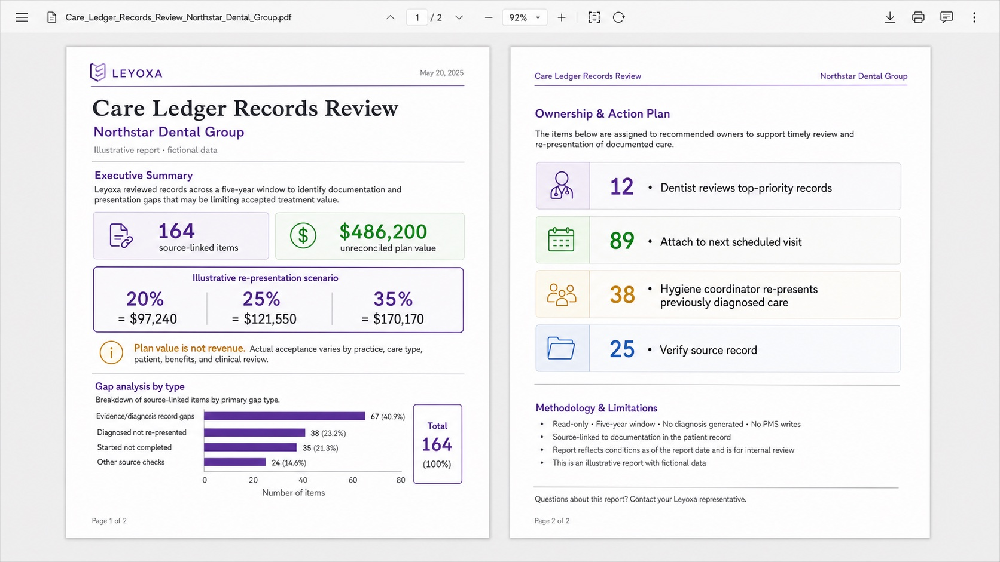

Most dental acquisitions are diligenced on financials and a lease. The practice management system — where the actual clinical and production history lives — is usually reviewed by opening it and looking around. That is where the defects a buyer walks on tend to sit, and it is the one part of the file nobody on the deal is contracted to verify.
We do one thing: a bounded, read-only review of a target's records, returned as source-linked evidence both sides can read. No diagnosis, no writes to the practice management system, no clinical judgment. Every finding points at the record it came from.
What we check
Source continuity. Whether the history in the system is actually continuous, or whether a prior migration, software change or ownership transfer left a gap the seller's reports quietly span.
Migration verification. Whether records that moved between systems arrived intact — charts, notes, treatment plans, attachments — and what did not survive the move.
Record exceptions. Chart-note quality, missing identifiers, unlinked attachments, and the documented-versus-billed gaps that become a post-close problem for whoever inherits them.
Ownership and access. Which vendor paths and permissions the buyer will actually hold on day one, and which require the seller's cooperation or a vendor's approval to obtain.
Stated limitations. What the review could not establish, named explicitly, rather than left as an implied clean bill.
What a finding looks like
Not a score and not a narrative. Each item carries the source it came from, its state, the practice or location it belongs to, and an owner assigned for the work after close. The buyer keeps the artifact — the ledger, the worklist, the methodology, the limitations and the audit trail — whether or not the deal proceeds.

What it costs
Planning ranges are public so an advisor can qualify a referral without a call. Final fixed scope follows access and quality review.
A bounded chart and field sample, access-path assessment, source-quality findings, and a go/no-go recommendation.
Approved read-only reconciliation, source-linked Care Ledger, owner-assigned handoff, methodology, limitations, and audit trail.
What we need from a referral
The target's practice management system, the number of locations in scope, and whether the seller has agreed to a read-only access path. That last one decides whether a review is possible at all, and it is the question worth asking before anything else.
Why advisors send these
A verified record position is the part of the file that is hardest to argue with later. It gives a buyer a reason to proceed with a number attached, or a documented reason to walk — and it leaves the advisor holding evidence rather than an opinion when the question comes back after close.